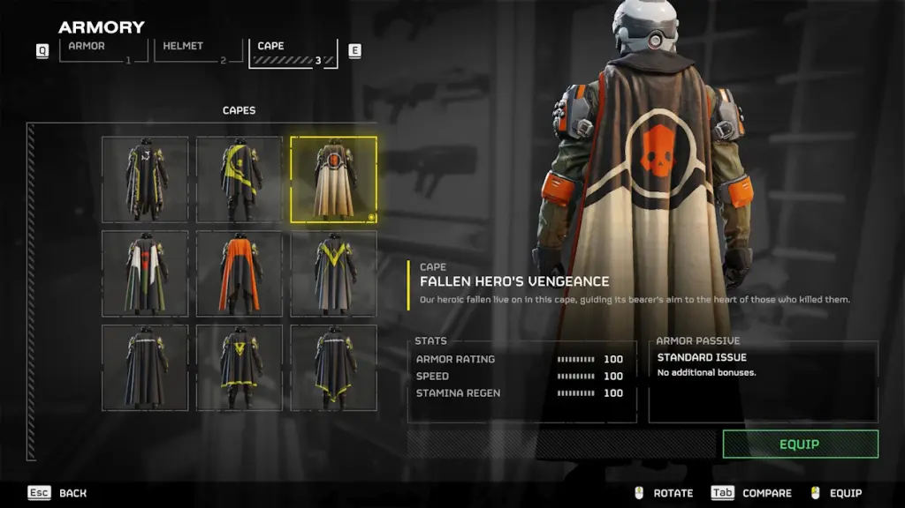

Helldivers Death.
The battle of malevelon creek was one of the worse the helldivers had to fight.
Death: 25054171
Helldivers Memories.
On april 3rd 2184, was the first full day of peace on Malevelon Creek.
In order to commemorate the president of super heart gave a cape to the veterans of Malevelon creek.
